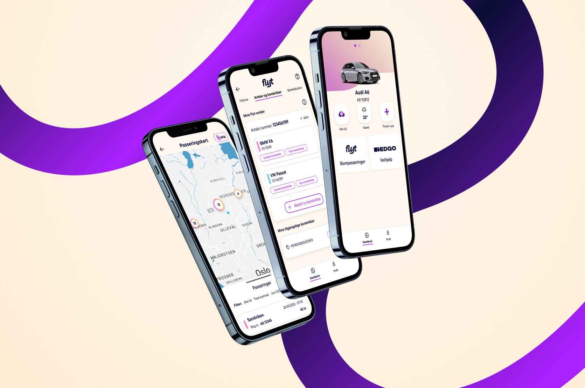
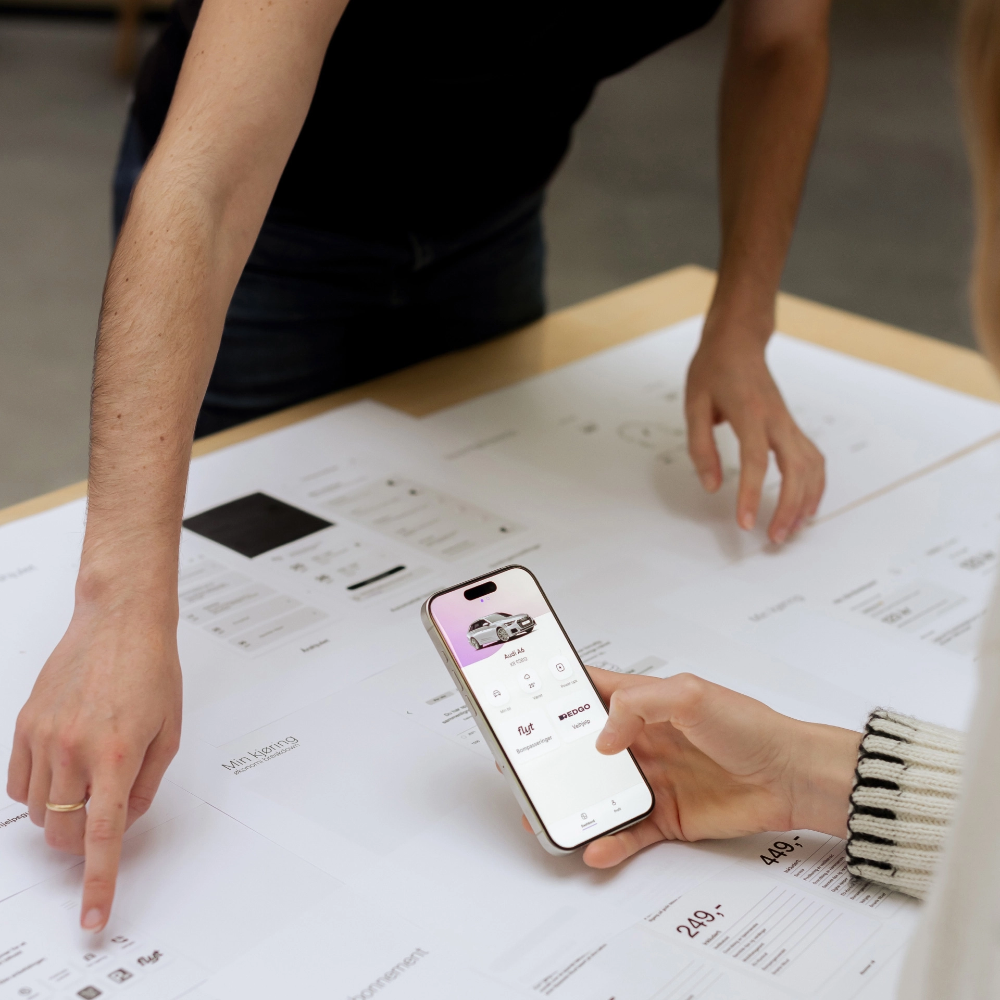
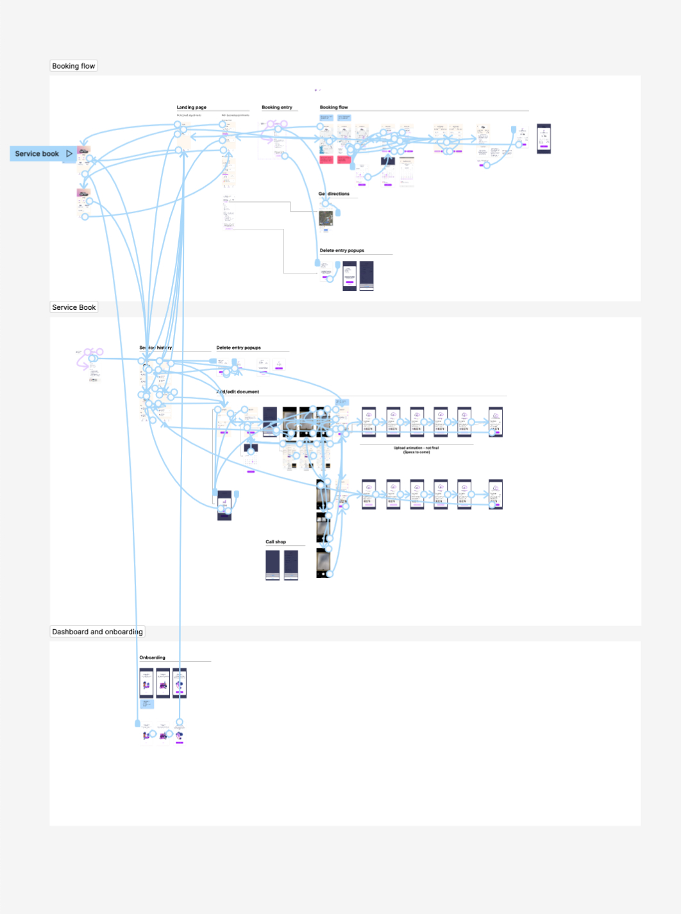
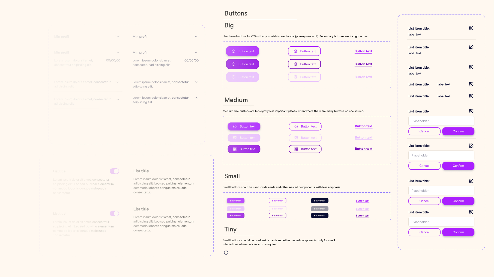
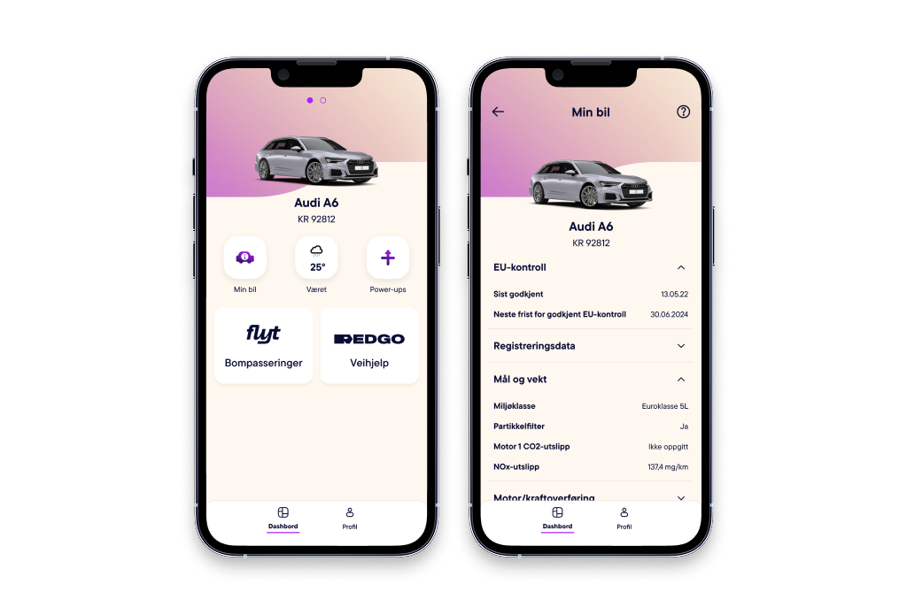
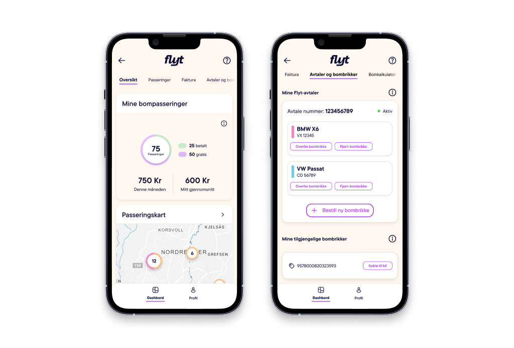
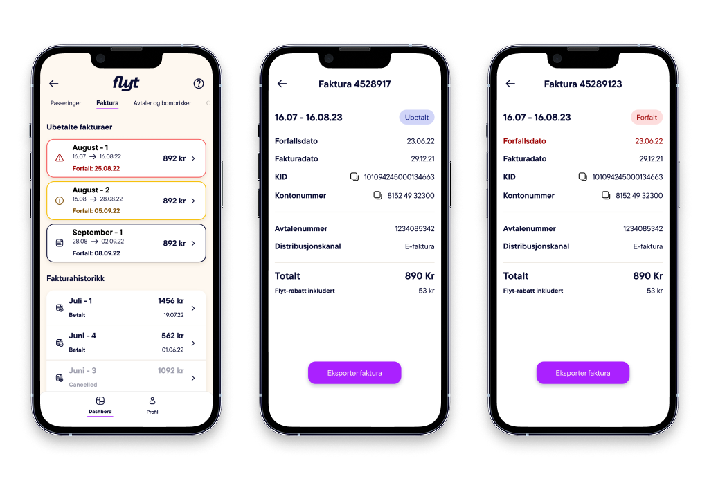
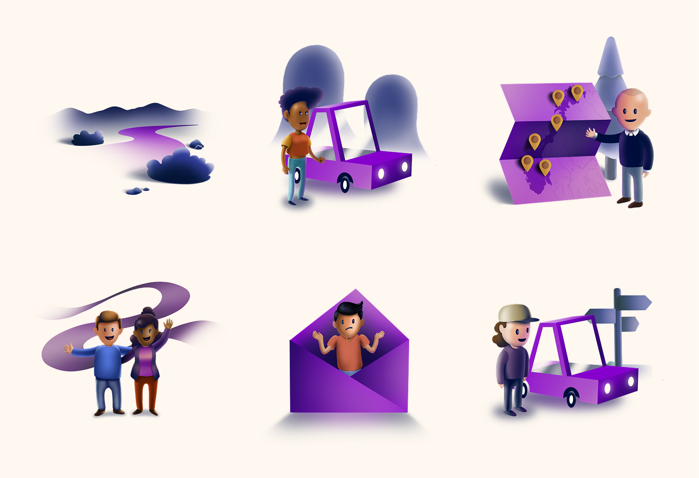

Bilista · EGGS Design · Oslo, Norway · 2022 – 2023
From concept to market — Norway's private mobility platform

Bilista is Norway's first holistic car ownership platform, built for Gjensidige Mobility Group. It gives drivers a single place to manage everything connected to their vehicle — from booking repairs to tracking toll spending. I worked on this project at EGGS Design in Oslo, taking it from open concept to market-ready product.
Joined April 2022 — 2023
My Role
My role spanned the full design cycle: leading UX and UI, running user research and interviews, prototyping and testing features iteratively, and owning both the component library and illustration system — built to flex as the brand identity evolved.
- UX & UI Design
- User Research & Interviews
- Prototyping & Testing
- Component Library
- Illustration System
- Motion Design
The Challenge
Gjensidige's ambition went beyond insurance. They wanted to offer private customers a complete, holistic service — but had no defined concept of what that looked like. The challenge wasn't to redesign an existing product. It was to define, from scratch, what a scalable private mobility platform should be, and then build it.

Wireframes & Testing
Every feature started with a user problem. We talked to Norwegian drivers to understand where car ownership created friction, then moved fast to low-fidelity prototypes. Testing happened early and often — concepts that didn't hold up in user sessions got cut before they reached development.

Component Library
Building the component library was one of the more complex structural challenges on this project. The brand identity was still evolving in parallel — so the system had to be flexible enough to absorb changes without breaking. Working closely with developers in Figma, we created a shared library that kept design and engineering in sync across every sprint.

Feature
Dashboard
Your cars, always one tap away
The dashboard is the anchor of the app — the first thing users see and the place they return to most. Design goal was immediate orientation: your cars front and center, relevant actions surfaced without hunting, settings always reachable. Research showed users wanted control without complexity, so we kept the information hierarchy tight.

Feature
Flyt
Toll costs, finally under control
Toll spending in Norway is invisible until the invoice arrives. Flyt fixes that — giving users a live breakdown of costs, usage patterns, and connected toll tags. The design goal was to make financial data feel approachable, not overwhelming. We achieved this through progressive disclosure: summary first, detail on demand.

Feature
Invoices
Right information, right moment
Late or unclear invoices erode trust. We designed a warning system that surfaces the right alert at the right time — using both color coding and iconography so the system works for users with color vision impairments. No ambiguity about what needs attention and when.

Feature
Motion Design
Bringing the platform to life before launch
Motion was used as a communication tool, not decoration. I produced this video in Blender to demonstrate Bilista's core flows to stakeholders before the full product launched — translating complex functionality into something immediately readable for a non-design audience.
Shipped and scaled in 2023
Outcomes
Bilista launched in 2023 and grew to over 200,000 users across Norway. The platform was built by a tight cross-functional team — 2 designers, 1 business designer, 1 project owner, and 5–10 developers — moving from open concept to market-ready product inside a large insurance company.
- 200K+ Users across Norway
- 2023 Year launched
- 2 Designers on the team
Feature
Illustration System
Human-centered visuals at every touchpoint
Bilista's illustration system was built to make a functional, data-heavy app feel human. Each illustration was designed within brand constraints — consistent line weight, limited palette, character without noise. The system scales across onboarding, empty states, and feature education throughout the app.

Want to talk?
Whether it's about this project, my process, or a potential opportunity — I'd love to hear from you.